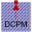
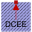
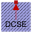
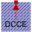

DCMachinesThermal parts of DC machines |
|
Package Contents
|  |
Thermal ambient for DC machine with permanent magnets |
|  |
Thermal ambient for DC machine with electrical excitation |
|  |
Thermal ambient for DC machine with series excitation |
|  |
Thermal ambient for DC machine with compound excitation |
Information
This information is part of the Modelica Standard Library maintained by the Modelica Association.
Thermal parts for DC machines